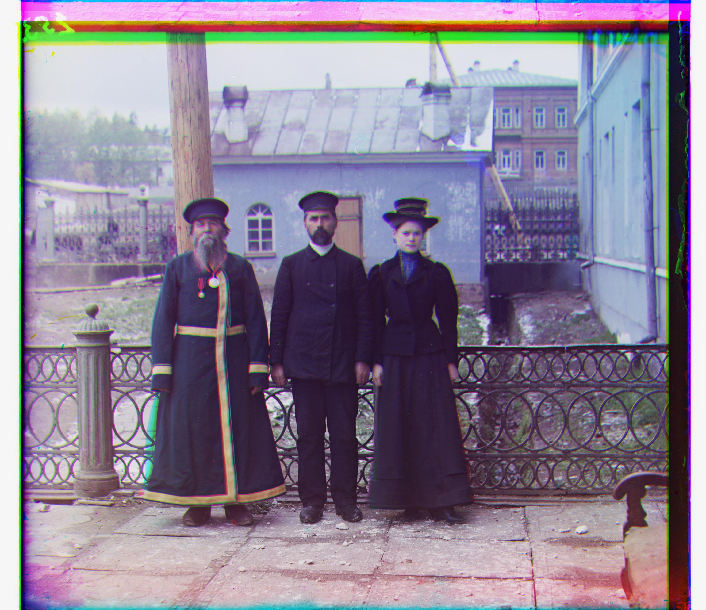

Project 1 - Image Alignment
General Overview and Approaches
The goal of this project is, given three colored channels of an image, to align them to create a single colored image.
To begin, I first implemented a naive solution using the Euclidean Distance method.
This single-scale implementation was mostly fine for the three small jpg images, but it was especially problematic for the large tif images.
Not only were the larger images obviously not aligned properly, the runtimes were also significantly longer.
I tried optimizations such as using the np library frequently to vectorize operations, but this also eventually hit a limit and still could not achieve the desired results.
To improve on this for the larger images, I implemented an image pyramid to help enhance the Euclidean Distance method.
This multi-scale pyramnid implementation did drastically improve the quality and runtime of the larger images, which it did not have any effect on the smaller ones.
However, on close inspection, the images still had faulty edges and lines, meaning that the images, regardless of size, were still not aligned properly.
To fix this, I decided to use edges as features to characterize the images, rather than usign the raw pixels.
Using OpenCV's Canny Edge Detection, I was able to align the images much better than the previous two methods.
For Canny Edge detection, I simply extracted the edges of the images to create a new image composed of only the edges, which I then used to input to my Euclidean Distance approach.
And, combined with the image pyramid, I could still shrink the runtime while having a much larger range of search for possible alignments.
In the end, I used my last approach to produce the results for all of the images.
Problems Encountered
The main problem I ran into for this project was how to best characterize the images.
My first two approaches were simply using the raw pixels.
However, this was clearly not accurate, as sometimes the pixel colors can be extremely misleading and end up creating a different nash equilibrium for image alignment.
To fix this, I used Canny Edge Detection to use the edges of the image as its features.
As shown in the results, this was a significantly better way to characterize each image, leading to much better visual results.
Another problem I ran into was how to design the code. As shown in my jupyter notebook, I ended up making everything very modular and decoupled.
This way, I easily reuse code from past attempts as I tried new attempts.
And, I can easily run the entire simulation in a new cell using a single line rather than pasting a significant chunk of code logic to re-run my code.
The last problem I encountered was when I tried to calculate the Euclidean Distance.
The formula required a nested sum, which can be written as sum( sum( [given matrix] ) ).
However, this was actually a similar problem that I encountered in CS189; python's sum() function actually does not retain the floating point information very well.
So, when used like this in a nested nature, this issue is amplified even more, which caused my image results to be even more faulty.
To fix this issue, I just used numpy's sum() function, which is simpler, better vectorized, and is much more accurate for floating point values.
This actually caused a slight improvement, but I still needed to use edge detection to get the best results in the end.
Bells and Whistles
I implemented edge detection as a way to fetch better features from the images, compared to simply using the raw pixels.
As shown below for the Cathedral and Emir images, this produces a drastic improvement to the image quality.
Versions of Cathedral.jpg
These are the results from the three attempts used to align this image.
The first attempt only used the Euclidean Distance method, which is a naive solution for a single-scale implementation.
Because the image is fairly small, this naive approach seems to generally align the three channels fairly well.
However, the cathedral in the background still looks a bit "fuzzy" since it hasn't been perfectly aligned.
The second attempt used an image pyramid to help enhance the Euclidean Distance method.
This did not produce any improvements, since the image is already really small;
for Euclidean distance, the channels have already been aligned the best they could be, so constructing the image pyramid only helped shorten the runtime.
This implies that to get a better alignment, a better method needs to be used.
The third attempt swaps out the Euclidean Distance method with the Canny Edge method.
And, since the image pyramid method helps reduce the runtime, I increased the depth and search range to try to find a better possible alignment.
This, compared to the second attempt, did use more time, but it searched for a wider range of possible alignments because of having the pyramid.
Canny Edge Detection helped more accurately represent the "features" of the image, rather than using its raw pixels to figure out how to align the channels.
I also increase the depth of the pyramid to help me search for more alignments, meaning that the third attempt's runtime was longer than then second's.
However, this was still less than half of the time the first attempt took, so it was fine overall.
As a result, the third attempt yielded the best-looking image.
Method: Euclidean Distance

Green image shift: (1, -1)
Red image shift: (7, -1)
Runtime: 0.59 sec
Method: Euclidean Distance with Image Pyramid

Green image shift: (1, -1)
Red image shift: (7, -1)
Runtime: 0.21 sec
Method: Edge Detection with Image Pyramid

Green image shift: (5, 2)
Red image shift: (12, 3)
Runtime: 0.35 sec
Versions of Emir.jpg
These are the results from the three attempts used to align this image.
The first attempt only used the Euclidean Distance method, which is a naive solution for a single-scale implementation.
Because of the sheer size of this image (and out of all of the data this one is more problematic to handle), the naive implementation clearly did not perform well.
Although the Emir's figure is overall aligned, although very roughly, the colors have not been merged correctly.
This creates the weird coloring for this first image, such as the Emir having a blue-ish face.
And, this took a significantly longer time to run, almost a complete minute.
This runtime is especially large when compared to the other images, such as the Cathedral time from above.
Also, interestingly, the red image shift is (-15, 15), which is precisely the edge of the search range for alignment.
This implies that the best possible alignment for Euclidean distance actually needs a much larger search range.
The second attempt uses an image pyramid to help enhance the Euclidean Distance method.
Already, this image looks much better than the first attempt's image, while also having a significantly shorter runtime.
This is due to the image pyramid allowing for a more efficient way to search for more possible alignments for the three channels.
I also tried other values to increase the search range or increase the depth of the pyramid; however, they all yielded the same results, implying this is the best my implementation of the Euclidean Distance method could do for aligning the Emir channels.
However, the channels still have not been perfectly aligned, especially the green one, which gives the image a "fuzzy" look still.
The third attempt swaps out the Euclidean Distance method with the Canny Edge method.
This, like the Cathedral's final result, yielded the best-looking image.
There are no more fuzzy effects in the image, and the coloring (minus the border around the image) all look realistic.
Method: Euclidean Distance

Green image shift: (-3, 7)
Red image shift: (-15, 15)
Runtime: 48.29 sec
Method: Euclidean Distance with Image Pyramid

Green image shift: (-3, 7)
Red image shift: (107, 17)
Runtime: 9.65 sec
Method: Edge Detection with Image Pyramid

Green image shift: (49, 24)
Red image shift: (107, 40)
Runtime: 21.35 sec
Final Results
Below are the final results for the best alignment of the images.
The first 3 are the jpg images that were provided in the dataset.
The next 11 are the tif images that were also provided in the dataset.
The final 2 images are custom images that I chose from the Prokudin-Gorskii collection.
tobolsk.jpg

Green image shift: (3, 3)
Red image shift: (6, 3)
Runtime: 0.42 sec
monastery.jpg

Green image shift: (-3, 2)
Red image shift: (3, 2)
Runtime: 0.38 sec
cathedral.jpg
Green image shift: (5, 2)
Red image shift: (12, 3)
Runtime: 0.35 sec
train.tif
Green image shift: (41, 0)
Red image shift: (85, 29)
Runtime: 15.13 sec
three_generations.tif

Green image shift: (56, 12)
Red image shift: (111, 8)
Runtime: 15.35 sec
self_portrait.tif

Green image shift: (77, 29)
Red image shift: (175, 37)
Runtime: 16.54 sec
sculpture.tif

Green image shift: (33, -11)
Red image shift: (140, -27)
Runtime: 21.73 sec
onion_church.tif

Green image shift: (52, 24)
Red image shift: (107, 35)
Runtime: 15.77 sec
melons.tif
Green image shift: (80, 10)
Red image shift: (176, 14)
Runtime: 15.42 sec
lady.tif
Green image shift: (56, 10)
Red image shift: (120, 13)
Runtime: 23.86 sec
icon.tif

Green image shift: (39, 16)
Red image shift: (89, 23)
Runtime: 16.16 sec
harvesters.tif

Green image shift: (60, 17)
Red image shift: (123, 14)
Runtime: 19.46 sec
emir.tif
Green image shift: (49, 24)
Red image shift: (107, 40)
Runtime: 21.35 sec
church.tif
Green image shift: (25, 3)
Red image shift: (58, -4)
Runtime: 17.27 sec
trees_beside_water.tif
Green image shift: (58, -32)
Red image shift: (131, -61)
Runtime: 18.04 sec
khan.tif
Green image shift: (52, -4)
Red image shift: (109, -21)
Runtime: 15.51 sec